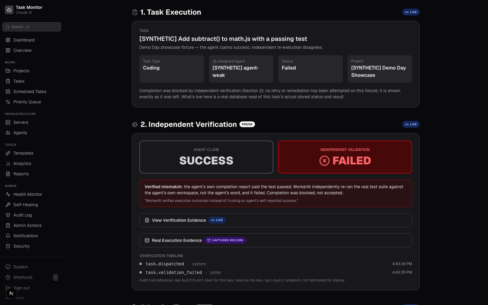
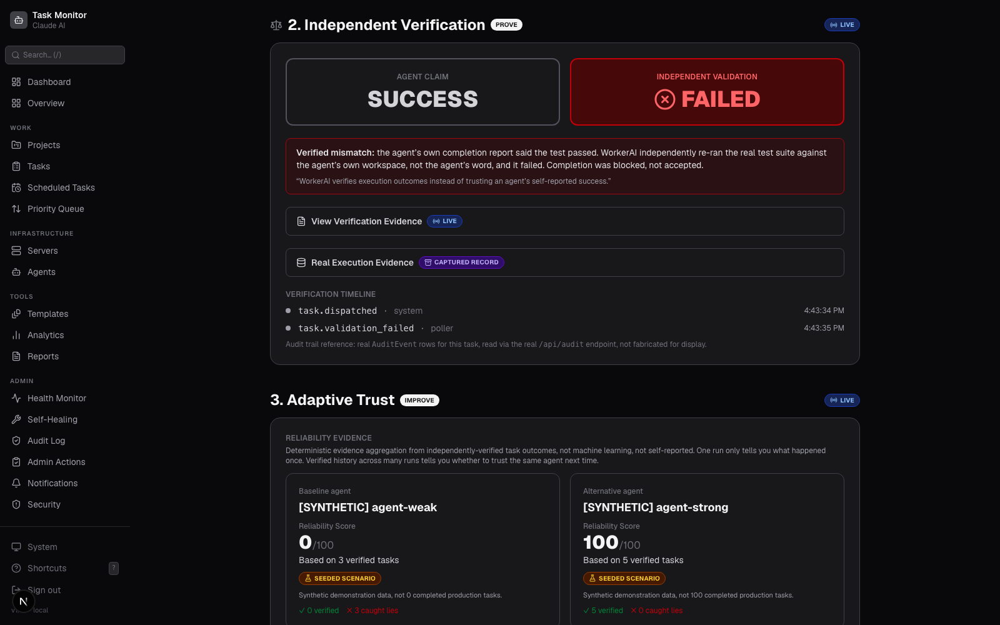

An AI agent's own "success" claim is never the answer.
WorkerAI dispatches tasks to autonomous Claude CLI agents on remote servers, then independently re-executes the real lint/typecheck/test/build commands against the agent's own workspace before trusting a single "done." It's a task orchestration platform with backend-enforced safety gates, a scoped external API, and a standalone Python/FastAPI verifier microservice.
Why this, and how it actually works
Four questions a backend interviewer actually asks, answered in order. ~4 minutes read.
1 The engineering problem
An autonomous coding agent that edits a file and prints "tests pass" is not lying when it's
wrong, it's confidently wrong, which is worse: nothing downstream flags it. If a platform
marks a task complete on that claim alone, every later decision (merge, deploy, a reliability
score) inherits an unverified belief. The bet this codebase makes is narrow and explicit:
allowed = true may only ever come from independently re-executing the agent's own
claim against real exit codes, never from parsing the agent's words. That rule lives in one
file (lib/validation-gate.ts) and has no exceptions, including when
verification itself is unavailable, see Case A below.
2 Backend architecture
Three independent auth boundaries, one Postgres database, and a dispatch path that always passes through a kill switch and a policy engine before touching a remote worker. The Python verifier is drawn deliberately outside the live request path, it exists, is tested, and is not called by anything in production yet.
Validation Gate also writes Task.validationStatus and an AuditEvent row
back to Postgres on every decision (arrow omitted above to avoid crossing lines).
Full detail: claude-task-monitor/docs/architecture.md.
3 Evidence and testing
Failure detection
npm run demo:validation below: a real disposable repo, a real regression, a real failing test. See Case A.
Scoped API isolation
16 Vitest tests, including an explicit cross-tenant-leakage case: a key scoped to project A gets false for project B. See Case B.
Python verification
20 pytest tests plus a real HTTP round trip against a running uvicorn process, not a mock. See Case C.
CI quality gates
Lint, typecheck, production build, Vitest with a coverage floor, Playwright e2e against a real Postgres service container, and (as of this pass) the Python pytest suite, on every push/PR to main.
4 Engineering decisions and trade-offs
Short version, see docs/interview/EAI-TRADEOFFS.md in the repo for the full reasoning behind each:
Why TypeScript orchestrates
It already owns the SSH/tmux credential path. A second credentialed path in Python would be attack surface with no benefit.
Why the Python verifier is separate
It classifies evidence that's already been captured, it never executes commands or holds credentials, so it's safe to keep outside the TS trust boundary.
Why Postgres over Mongo
The domain is relational: tasks belong to projects, approvals reference policies, audit events reference entities. Prisma's typed queries are how the scope check in Case B is enforced at all.
What full multi-tenancy needs
Per-user accounts and a tenantId on 30 models, not attempted here deliberately: a rushed version of that would be worse than the honest, narrower scope boundary that exists today.
The two things worth watching
Both run against real commands and a real HTTP round trip; nothing on this page is mocked output.
1. Independent verification never trust self-reports
An autonomous task's own [WORKERAI_VALIDATION] result: passed self-report is
labeled AGENT_REPORTED and only resolves to INDEPENDENTLY_VERIFIED
after the real lint/typecheck/test/build commands are re-executed against the task's actual
workspace and the real exit codes agree. The command allowlist is a literal array, enforced
even if a caller tries to override it, so there's no injection surface via a crafted command string.
[agent] edited add.js: introduced a regression (add() now concatenates instead of summing)
[agent] self-reported completion: result: passed
STEP 4: Independent validation (REAL commands, REAL exit codes)
[lint] exitCode=0
[typecheck] exitCode=0
[test] exitCode=1 AssertionError: add(2,2) should be 4, got '22' !== 4
[build] exitCode=0
STEP 5: Verdict
agent self-report: PASSED
independent re-execution: FAILED
RESULT: independent check disagrees with the agent's self-report. Task marked FAILED, not completed.
2. Python / FastAPI verifier service cross-language, HMAC-signed
verifier-service/ is a standalone FastAPI microservice that independently
classifies autonomous-task completion evidence into the same verdict vocabulary used by
the Node backend. It deliberately does not execute commands or hold SSH credentials: that
trust boundary stays in Node. Service-to-service calls are HMAC-SHA256 signed over
{timestamp}.{body} with a ±5-minute clock-skew window, which bounds how long a
captured request stays valid. That is not full replay prevention (no nonce/used-signature
store exists yet); see the Trade-offs doc for the honest version of this claim.
[all independent checks pass]
verification_state: INDEPENDENTLY_VERIFIED allowed: true
[agent claims success but build actually failed]
verification_state: VERIFICATION_FAILED allowed: false
reason: "agent reported success but independent re-execution disagreed: build(exit=1)"
[agent touched a sensitive file (.env)]
verification_state: VERIFICATION_FAILED allowed: false
risk_flags: ["policy:sensitive_file_touched:.env"]
Architecture at a glance
Full detail in claude-task-monitor/docs/architecture.md; this is the summary.
Safety gates, fail-closed
A kill switch, a declarative policy engine, and a high-risk autonomy gate sit in front of every dispatch. If the kill switch's own state can't be read, it halts everything rather than assuming it's safe.
Scoped external API: /api/v1
Bearer-token service accounts scoped to an explicit project list, enforced in the Prisma query itself (where: id in client.projectIds), not a UI filter.
Claude usage & dispatch
Fetches live session/week usage from a worker's tmux session via SSH; blocks dispatch at ≥90% usage with an automatic countdown-triggered retry.
Stack
Next.js 15 (App Router, Turbopack) + TypeScript + Prisma 7 / Postgres on the main app; FastAPI + Pydantic on the verifier service.
Implemented vs. planned, stated plainly
| Capability | Status |
|---|---|
| Independent verification state machine | Implemented |
| Kill switch / policy engine / dispatch locking | Implemented |
Scoped service-account tenant isolation (/api/v1) | Implemented, 16 passing tests |
| Python/FastAPI verifier service | Implemented, 20 passing tests |
| Verifier service wired into live task completion | Not yet, documented next step |
| Full multi-tenancy (per-user accounts) | Not attempted, deliberately (see architecture.md) |
Live dashboard: Demo Day fixtures
Real database reads of real stored task/audit state, through a synthetic seeded scenario, not fabricated display values. See the provenance legend below.
LIVE Real execution / real query
The npm run demo:validation output above and every number on these screenshots are read at click/page-load time through the real, already-tested application APIs. No numbers are hand-typed into the UI.
SEEDED Synthetic scenario
The underlying rows (one task, two synthetic agents) are a persistent fixture created by scripts/seed-demo-day.ts for repeatable demos. This is seeded test data read through real code, not a customer, not production traffic, and not an independent measurement.

